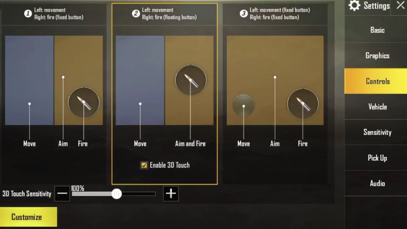
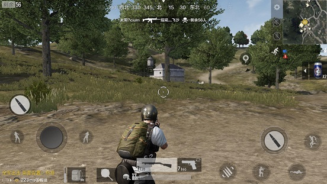
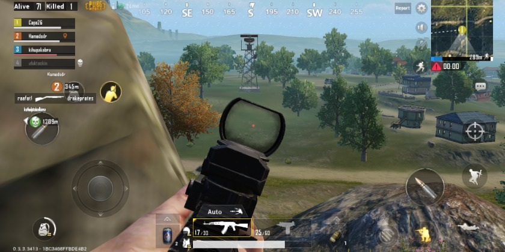
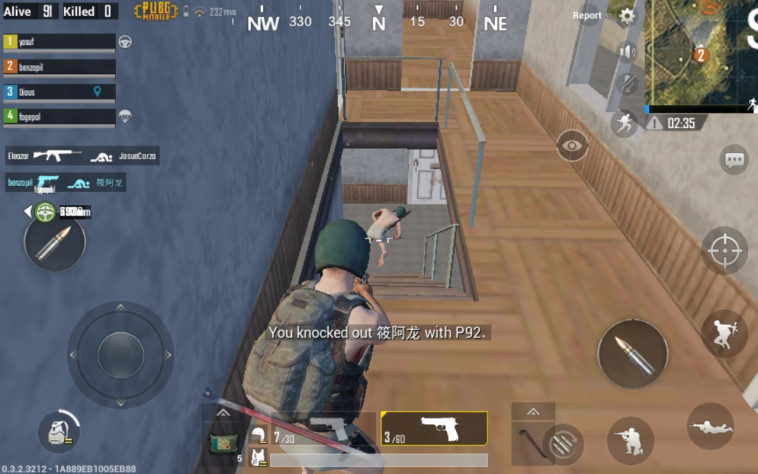
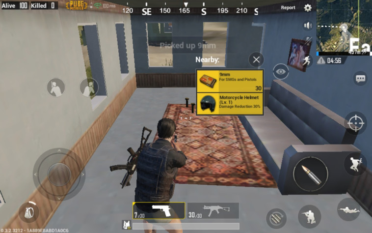
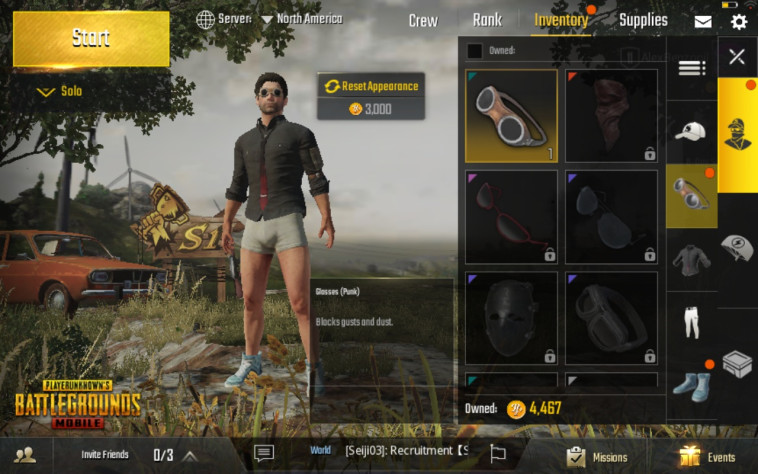

Описание игры PUBG Mobile
PUBG Mobile — это мобильная версия популярной королевской битвы PlayerUnknown's Battlegrounds (PUBG), разработанная и изданная компанией PUBG Corporation и Tencent Games. Игра была выпущена в 2018 году и быстро завоевала популярность благодаря захватывающему игровому процессу, реалистичной графике и множеству возможностей для взаимодействия между игроками.
Королевская битва:
Игра предлагает несколько карт, каждая из которых имеет уникальный ландшафт и особенности. Игроки могут исследовать города, деревни, леса и пустыни, что добавляет разнообразия в игровой процесс.
Разнообразные карты:
Предположим, игрок уже нашёл идеальное оружие, теперь время раздобыть подходящий прицел. Хорошие шансы на победу будут при получении прицела с четырёхкратным зумом.
Оружие и снаряжение:
В PUBG Mobile доступно огромное количество оружия, бронежилетов и других предметов, которые игроки могут находить и использовать в боях. Каждый предмет имеет свои характеристики, что позволяет игрокам адаптировать свой стиль игры.
Командные режимы:
Игроки могут участвовать в матчах как в одиночку, так и в командах до четырех человек. Командные режимы способствуют сотрудничеству и стратегии, позволяя игрокам работать вместе для достижения победы.
События и обновления:
PUBG Mobile регулярно обновляется, предлагая новые события, временные режимы и контент, что делает игру свежей и интересной для игроков.
Социальные функции:
Игра включает в себя функции чата и возможность добавлять друзей, что позволяет игрокам общаться и организовывать совместные игры.
Глобальное сообщество:
PUBG Mobile имеет огромное и разнообразное сообщество игроков по всему миру. Это создает уникальную атмосферу, где игроки могут обмениваться опытом, стратегиями и участвовать в обсуждениях на различных платформах.
Киберспорт и турниры:
PUBG Mobile активно поддерживает киберспортивные мероприятия, включая крупные турниры и лиги. Это привлекает профессиональных игроков и команды, создавая конкурентную среду и позволяя зрителям наслаждаться захватывающими матчами.
Создание контента:
Игра вдохновила множество стримеров и контент-креаторов, которые делятся своими игровыми моментами, стратегиями и обучающими видео. Это способствует популяризации игры и повышению интереса к ней.
Cоветы по PUBG Mobile для новичков
С помощью этих советов, новичкам станет проще вникнуть в игровой мир и по крайней мере дольше сохранять себе жизнь. Однажды, игрок непременно станет победителем. Важно лишь не сдаваться.
Настраивайте игру под себя
Не все игроки понимают, что настройки какого-нибудь блоггера или стримера могут быть просто не нужны. Зайдите в настройки и проведите там 1-2 часа. Настраивайте чувствительность, движение, кнопки, расположение элементов. Всё должно быть так, чтобы вы могли сказать: «да, мне удобно играть с такими настройками». Старайтесь не опираться на примеры, которые предлагают вам другие игроки. Что-то позаимствовать можно, но все мы индивидуальны — всем нужно что-то свое.
Начните с настроек схемы, а закончити индивидульными настройками звука. Поверьте, со временем вы настолько привыкните к своему конфигу (настройкам), что будете благодарить себя за то, что однажды решились на его создание.
Настройки пабг мобайл
Держите прицел на голове
Это один из самых полезных и забытых советов. В PUBG, Warzone, Fortnite и прочих Battle Royale играх игроки делают упор на свой лут и умение правильно перемещаться. Однако при встрече с реальным соперником на поле боя, когда вы остаетесь 1 на 1, важнее становится то, куда вы попадете первым. Если вы держите прицел на ногах, но и попадете в ноги. Если прицел на голове, то попадете в голову. Имейте это ввиду.
Следите за своим рюкзаком
Если вы тащите на себе огромный рюкзак, то это неприятно как в жизни, так и в игре. Это неприятно ещё и тем, что в нужный момент, когда надо быстро залутать вещи с убитого врага, у вас просто может не оказаться места в инвентаре.
Следите за своим рюкзаком в пабг мобайл
Используйте вид от третьего лица
Аналогичный совет, который поможет вам в будущем, но пока можно начать привыкать к нему. Если вы встали за укрытие и знаете, что впереди бегают враги, то осматриваться и выглядывать совсем не обязательно. Быстро переключитесь в режим от третьего лица и осмотритесь.
Не влезайте в перестрелки
Представьте, что вы лутаете какой-то дом, а рядом начали стрелять. Причем стрельба не прекращается минуту, две, а потом резко затихает. Вы выходите и видите труп и игрока, который использует аптечку. Вы быстренько убиваете его и лутаете уже с двух игроков.
Это благоприятный расклад.
Используйте укрытие
Если вы вылезли из укрытия, начали стрелять то по одному, то по другому, то вы:
- Даете одному из игроков шанс быстро убежать, восстановить здоровье и перезарядить пушки.
- Рискуете попасть под перекрестный огонь.
Так делать точно не нужно. Поэтому реже вступайте в перестрелки. А если точнее, то ожидайте правильного момента, чтобы ударить по врагу конкретно и на поражение.
Не верьте, если перед вами начали приседать и выбрасывать дроп
Если вы только недавно начали играть в PUBG Mobile, то запомните самое главное: ваша цель — выживание. Если вы умрете, то автоматически проиграете. Этим пользуются многие игроки, но применяют хитрость. Они подходят к новобранцам, говорят в чате: «friendly», выбрасывают хороший дроп и ждут, когда вы начнете лутать. Как только вы начинаете смотреть на оружие, вас тут же убивают.
Будьте начеку и не оставляйте ничего без внимания
Человек может концентрироваться в особенно сложных моментах и его мозг начинает активнее работать в таких ситуациях. Помните, что вам нужно постоянно следить за тем, что происходит на карте.
- Услышали выстрел? Посмотрите в ту сторону. Убедитесь, что стреляющие не двигаются к вам.
- Услышали звук дропа или открытой двери? Обратите на это внимание, но помните, что вас могли забайтить — вы посмотрели на дверь, а впереди сидел противник, который моментально вас убьет.
- Никогда не отвлекайтесь от самой игры. Если вы начали матч, то до самой смерти в игре стоит смотреть только в экран.
- Помните, что вам нужно выжить. Вам будут мешать все, кто посмотрит в вашу сторону.
Старайтесь как можно больше следить за картой, так как она ваш самый многословный друг.
Не бойтесь тратить время на разминку
Многие игроки игнорируют тот факт, что перед хорошей игрой надо разминаться. Многие руководствуются правилом: «да ладно, в первой разомнусь». Можно не терять время и зайти на тренировочный полигон, чтобы:
- Потренировать чувствительность. Пальцы должны вспомнить, как правильно наводиться.
- Мозг должен включиться в игру и вспомнить звуки выстрелов, звуки подъема предметов и прочие.
- Даже глаза должны привыкнуть к тому, что скоро они будут следить за всем, что происходит на экране.
Тренировочный полигон в пабг мобайл
Играйте в пати
Начинать в одиночку всегда тяжело. Подтяните парочку друзей. Попробуйте поиграть в пати. Возможно, что вам будет тяжело наладить коммуникацию, но со временем вы станете неразлучной командой, с которой будет проще взять ТОП-10.
И не забывайте тренироваться.
PUBG: Battlegrounds:
Обзор мобильной версии
Королевская битва в кармане
Что удивительно, PUBG Mobile сделали максимально похожей на её «большую» версию, обойдясь без существенных изменений. Вы создаёте персонажа, выбираете режим (соло, дуо или стычка отрядов из четверых), запускаете поиск и через секунду оказываетесь на большой площадке с другими участниками, ожидая запуска матча. Затем пролетаете на самолёте над островом, выпрыгиваете — ну а дальше сами знаете, что происходит. Перед стартом игра автоматически выберет оптимальные настройки графики — я со своим дешёвым Huawei MediaPad T3 ни на что особо не надеялся, поэтому был рад, что на нём игра идёт очень плавно, пусть и с не лучшей картинкой.
Поначалу интерфейс пугает своей перегруженностью: слева — три кнопки, внизу — пять или шесть, справа вообще наберётся десяток. Но привыкнуть будет время, ведь сразу игрока в суровый открытый мир не выбрасывают — вместо живых участников в начальных матчах попадаются боты. Именно поэтому многие новички в мобильной PUBG тут же занимают место в первой тройке — это не вы такие профессионалы, а боты настолько беспомощные. Определить, живой перед вами человек или нет, очень просто — бот всегда останавливается, как только вас видит, и даже не пытается прицелиться. Нормальные люди чаще прячутся в зданиях или хотя бы пытаются «стрейфиться» при виде оппонента.
Управление стандартно для мобильных шутеров и будет знакомо давним любителям этого жанра. Виртуальный стик слева отвечает за движение, а подняв его вверх, можно активировать непрерывный бег. Чтобы повернуть камеру, нужно водить пальцем по правой части экрана. Там же расположена кнопка стрельбы. Рядом с ней — перезарядка, прицеливание, приседание и прыжок. В нижней части мы переключаемся между двумя видами оружия, а около них есть оружие ближнего боя, аптечки, напитки и прочие полезные вещи. Под стиком находится кнопка инвентаря. Больше полезных элементов интерфейса нет, если не считать мини-карту, которая разворачивается нажатием.
В отрядах правила те же, что в обычной версии, — раненых товарищей можно спасти.
К стрельбе приходится привыкать — если на сенсорном экране (или хотя бы на геймпаде) вы в шутеры никогда не играли, прицеливаться поначалу будет трудно. Тут есть два варианта: либо вы большим пальцем и крутите камерой, и стреляете, либо поворачиваетесь средним и стреляете указательным. Ещё есть управление с помощью гироскопа, которое наверняка будет для многих самым удобным, но мне опробовать его не удалось. Раз за разом погибать, пытаясь разобраться в кнопках, совсем не хочется, поэтому решение создателей наполнить первые матчи ботами обретает смысл — это отличная тренировка перед нормальной схваткой сотни живых людей. И с ними геймплей становится куда динамичнее и напряжённее.
Частичные улучшения
Разработкой мобильной версии занималась корпорация Tencent, а не PUBG Corp., поэтому в ней есть несколько качественных геймплейных изменений, не появлявшихся на PC или на Xbox One. Фанаты оригинала недоумевают, почему авторы PUBG Mobile додумались до таких простых вещей, а бывшая Bluehole — нет. В этой версии, пока игрок сидит в самолёте, он может открыть карту и увидеть линию, по которой транспорт пролетает. А при игре в отряде всегда показывается местоположение напарников и расстояние между вами и товарищами.
Все жёлтые вещи персонаж подбирает самостоятельно.
Разработкой мобильной версии занималась корпорация Tencent, а не PUBG Corp., поэтому в ней есть несколько качественных геймплейных изменений, не появлявшихся на PC или на Xbox One. Фанаты оригинала недоумевают, почему авторы PUBG Mobile додумались до таких простых вещей, а бывшая Bluehole — нет. В этой версии, пока игрок сидит в самолёте, он может открыть карту и увидеть линию, по которой транспорт пролетает. А при игре в отряде всегда показывается местоположение напарников и расстояние между вами и товарищами.
В главном меню есть не только инвентарь с одеждой, но и информация о вашем ранге, список друзей, миссии и даже общий чат.
Плюсы: хорошо оптимизированная PUBG с идентичным «старшей» версии геймплеем; благодаря системе рангов и ежедневным испытаниям возвращаться в игру хочется вновь и вновь; удобные нововведения, вроде автоматического поднятия полезных предметов; стабильное соединение с серверами, несмотря на наплыв игроков.
Минусы: к управлению придётся привыкать; китайская версия пока получает крупные обновления раньше остальных.